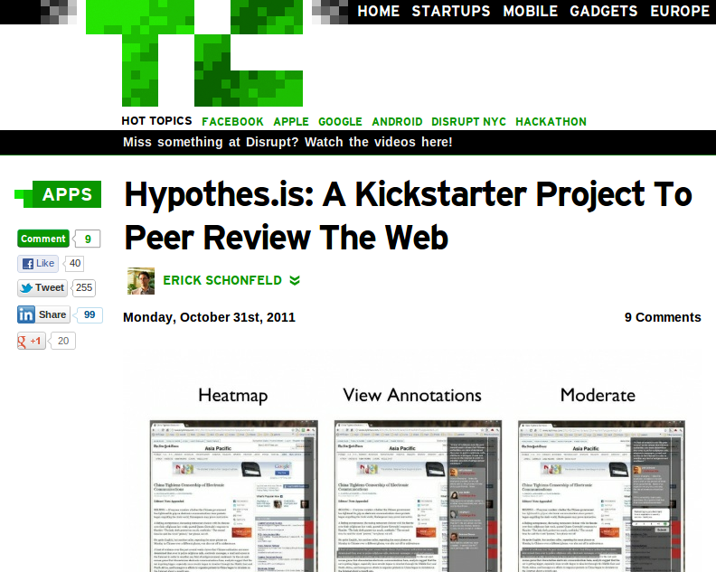
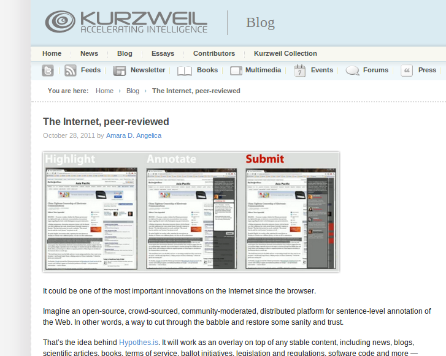
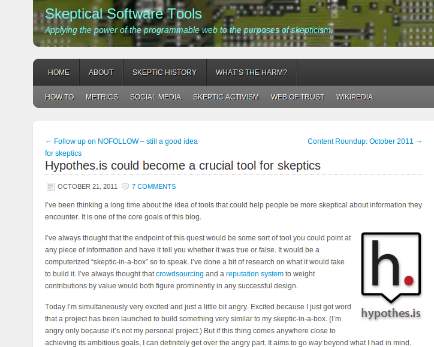

Press:

March 2, 2012
Read Write Web:
How We're Going to Fix Online Identity and Reputation"There are two fundamental, related cultural problems with the Web that Hypothes.is wants to address: identity and reputation. Reputation is the main problem, but you can't approach it without fixing identity."

November 19, 2011
Read Write Web:
The Internet Will Get a Peer Review Layer Next Year"A team of long-time leaders of the Internet community have come together behind Dan Whaley, one of the forefathers of contemporary search engines, to build a system called Hypothes.is..."

November 1, 2011
Researchity:
Peer review should be more like Hypothes.is than Hypothes.is should be like peer review!"It suggests that the future reputation and fact checking system of the internet should be more like academic peer review. But that’s the wrong way to look at it. Academic peer review should be more like Hypothes.is."

October 31, 2011
TechCrunch:
Hypothes.is: A Kickstarter Project To Peer Review The Web"The Web: never before has there been a medium where it was so easy to find so much information. And never before has so much of it been so wrong. Somebody needs to fact-check the Internet."

October 28, 2011
Kurzweil Accelerating Intelligence:
The Internet, peer-reviewed"It could be one of the most important innovations on the Internet since the browser. Imagine an open-source, crowd-sourced, community-moderated, distributed platform for sentence-level annotation of the Web..."

October 21, 2011
Forbes:
Would Your Blog Stand up To Criticism?"I am therefore going to become a very big fan of hypothes.is. Before hypothes.is launched I was chewing over the problem of peer review. Do we get enough peer review in a world of open communications?"

October 21, 2011
Skeptools:
Hypothes.is could become a crucial tool for skeptics"The Hypothes.is team is approaching it from a broader perspective, beyond that of scientific skepticism. They want to peer review any fact that appears anywhere on the web, on any site."